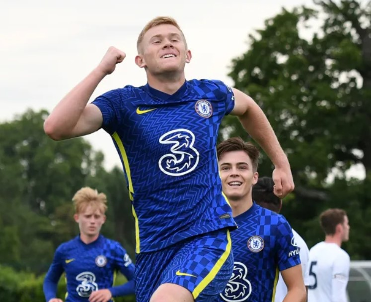
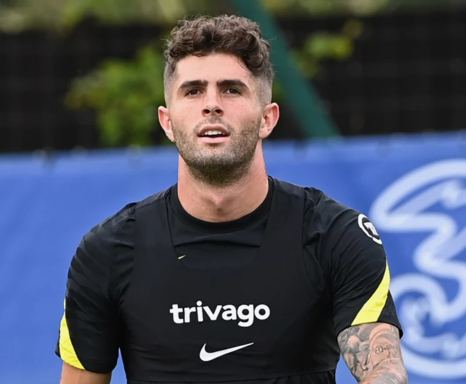
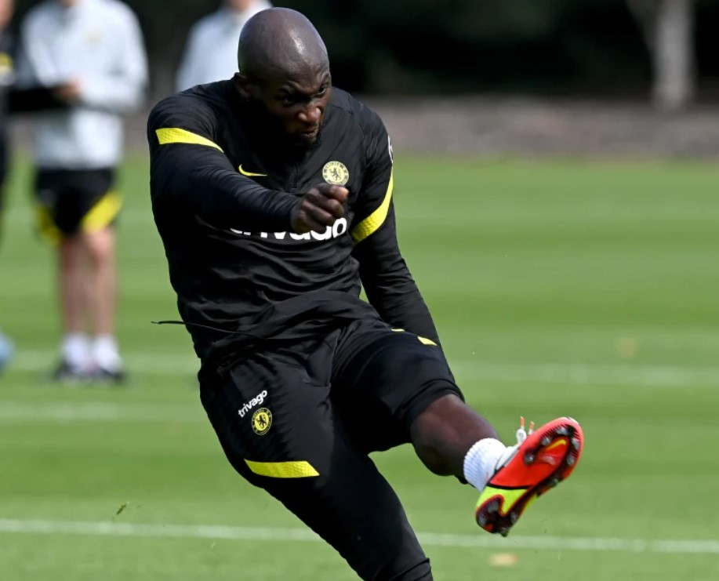

UNDER-18S REPORT: TOTTENHAM 2 CHELSEA 7
The goals flowed in north London on Saturday morning as our youngsters smashed seven past Spurs in the Under-18 Premier
League.
It was an even opening quarter of an hour at Tottenham’s training centre in Enfield, with Ed Brand’s boys looking to
build on their promising opening-day victory over West Brom.

PULISIC MISSES OUT BUT TRIO COULD ALL FEATURE
Thomas Tuchel used his Friday media conference to provide the latest team news ahead of Sunday’s London derby at
Arsenal…
Christian Pulisic will miss the game after testing positive for Covid-19 earlier in the week. However, the boss hinted
that Romelu Lukaku could be in line for his second Chelsea.

CHELSEA FOUNDATION RECRUITING SESSIONAL
Lucy Castle started her journey with the Chelsea Foundation as a sessional coach and now 10 years on, she is in her
dream role as a school sports coordinator.
Lucy started with the Foundation as a sessional coach in nurseries, after-school clubs and development centres, working
hours that fitted around her children.